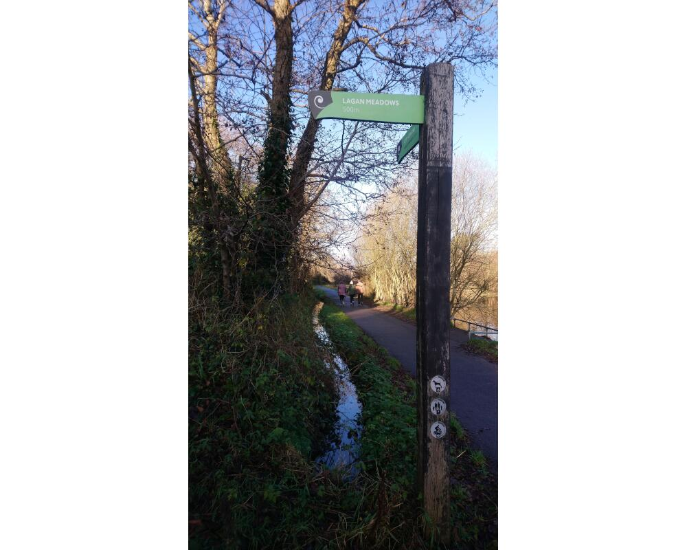
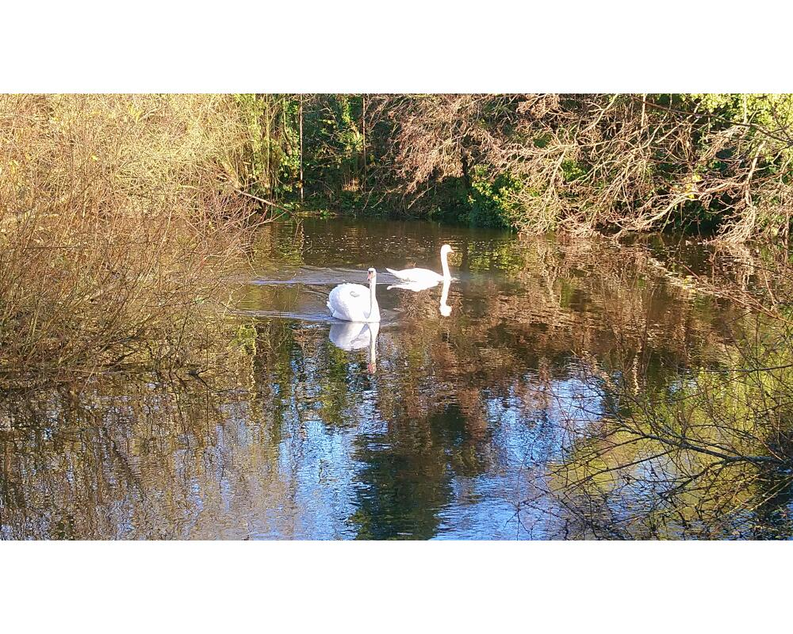

This walk is a flat walk, which is part of the canal walk from Belfast to Lisburn. Beware of the cyclists on this walk!
This is a looped walk which starts in the car park at Cutters Wharf. Once you enter the park, keep to the canal to your left and follow the tarmac path. Once you reach the sign for Lagan Meadows on your right, take this track. Follow this path to the open meadows and head across the meadows. Once across and you reach the end of this path, take a left. Continue this route until you are back at the tarmac road. Take a left and follow the road back to the car park.
This route takes you to Shaw's Bridge and back. From the car park at Cutters Wharf, follow the canal keeping it to your left. You will eventually reach the infamous Lock Keeper's Cottage. From here keep the canal to your right until you reach the road. If you choose to cross the road, this takes you to Shaw's Bridge. Head back the way you came.
